| 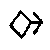 | B | 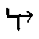 | R | |
| 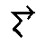 | C | 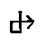 | S | |
| 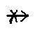 | Ch | 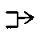 | T | |
| 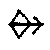 | D | 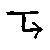 | Th | |
| 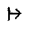 | F | 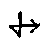 | V | |
| 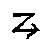 | G | 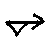 | W | |
| 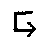 | H | 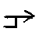 | X | |
| 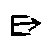 | J | 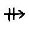 | Y | |
| 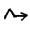 | K | 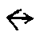 | Z | |
| 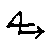 | L |  | A | |
| 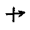 | M | 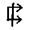 | E | |
| 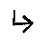 | N | 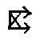 | I | |
| 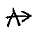 | Ng | O | ||
| 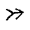 | P | 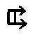 | U | |
| 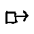 | Q | 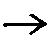 | Punctuation Space |
Structure: Barbaric logic incorporates a number of Chaos/Quantum principles.
Method of Obtaining: Having performed the Ouranos Rite with Invocation Three, participants take an Ouranian Pentacle (9cm. by 1cm. thick) with the Ouranian Sigil graven to an approximate depth of 1 mm. in each side. One side of the pentacle is white with a black sigil, the other black with a white sigil. The circumference is black. One sigil is placed upside down with respect to the other. It may be fashioned from wood, plastic, or non radioactive uranium.
Participants spin widdershins with the pentacle, meditating on a pre-arranged word then slam the pentacle on to the board below, moving it as they will to a series of letters which are recorded directly.
| M | L | K | Z | Y |
| N | C | B | J | X |
| Ng | Ch | H | W | |
| P | D | F | G | V |
| Q | R | S | T | Th |
If the pentacle is placed on the central blank square it may be interpreted as any letter. Vowels are added afterwards whilst meditating on the Ouranian god form. If a participant is moved to shout aloud a Barbaric word whilst spinning it can be accepted.
Script: Barbaric may be written using European characters for ease of reading in invocations or in any number of its own scripts. The following script called "Linear A" has the advantage of being capable of being written or engraved in any direction; left, right, up, down, or in a spiral, the arrows indicate the direction.
| 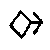 | B | 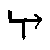 | R | |
| 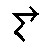 | C | 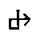 | S | |
| 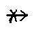 | Ch | 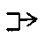 | T | |
| 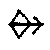 | D | 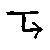 | Th | |
| 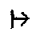 | F | 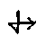 | V | |
| 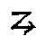 | G | 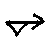 | W | |
| 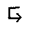 | H | 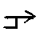 | X | |
| 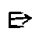 | J | 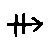 | Y | |
| 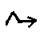 | K | 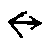 | Z | |
| 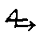 | L | | A | |
| 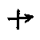 | M | 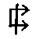 | E | |
| 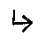 | N | 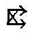 | I | |
| 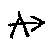 | Ng | O | ||
| 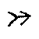 | P | 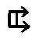 | U | |
| 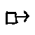 | Q | 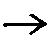 | Punctuation Space |